04. Application Lifecycle Management
📑 Table of Contents
- 1. Rolling Updates and Rollbacks
- Rollout Revisions & History
- Deployment Strategies: Recreate vs. Rolling Update
- Updating Deployments (Declarative vs. Imperative)
- Under the Hood: ReplicaSet Management
- Rollbacks & Undo Operations
- Deployment CLI Cheatsheet
- Rollout Verification Script
- 2. Commands and Arguments in Docker & Kubernetes
- Docker Process Lifecycle & CMD
- Docker ENTRYPOINT vs. CMD
- Overriding Entrypoint in Docker
- Configuring
commandandargsin Kubernetes Pods - Docker vs. Kubernetes Direct Mapping
- 3. Application Environment Variables
- Direct Key-Value Definitions
- Environment Variables via
valueFrom - 4. ConfigMaps
- Purpose & Lifecycle
- Imperative ConfigMap Creation
- Declarative ConfigMap Definition
- Injecting ConfigMaps into Pods
- 5. Kubernetes Secrets
- Secrets vs. ConfigMaps
- Imperative Secret Creation
- Declarative Secret Definition & Base64 Encoding
- Injecting Secrets into Pods
- Secret Security Risks & Hardening Best Practices
- 6. Multi-Container Pod Patterns
- Microservice Co-location & Shared Context
- Design Patterns: Sidecar, Adapter, Ambassador
- Multi-Container Pod Manifest
- 7. Init Containers
- Initialization Lifecycle & Sequential Execution
- Init Container Manifest & Use Cases
- 8. Self-Healing Applications & Container Health Probes
- Probe Types: Startup, Liveness, and Readiness
- Probe Handlers
- Production Multi-Probe Manifest
1. Rolling Updates and Rollbacks
Rollout Revisions & History
When a Deployment is created or updated (e.g., container image bumped, labels altered, replicas changed), Kubernetes initiates a rollout. Every rollout generates a new Deployment Revision (e.g., Revision 1, Revision 2). Tracking revisions enables auditability and atomic rollbacks to previous states.
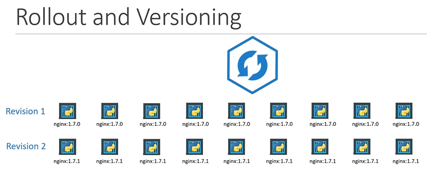
To inspect the live progress of an active rollout:
kubectl rollout status deployment/myapp-deployment
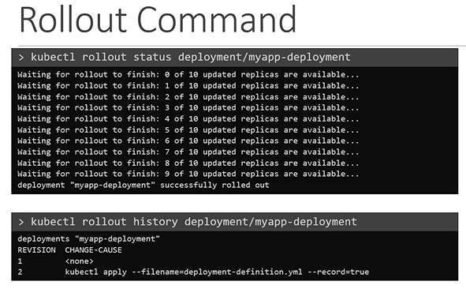
To view the history of revisions:
kubectl rollout history deployment/myapp-deployment
Deployment Strategies: Recreate vs. Rolling Update
| Strategy | Behavior | Downtime | Resource Overhead |
|---|---|---|---|
| Recreate | Terminates all old Pods simultaneously before launching new Pods. | Yes (downtime between termination and startup) | Low (no duplicate Pods) |
| RollingUpdate (Default) | Gracefully scales down old ReplicaSets while incrementally scaling up new ones. | Zero Downtime | Moderate (temporary extra Pod capacity) |
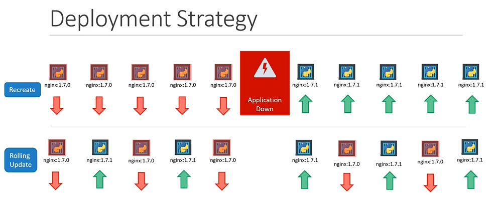
[!NOTE]
RollingUpdateis the default deployment strategy in Kubernetes. You can tune its behavior usingmaxSurge(how many Pods can be created abovereplicas) andmaxUnavailable(how many Pods can be unavailable during update).
Updating Deployments (Declarative vs. Imperative)
Declarative (Recommended)
Modify the Deployment manifest (deployment-definition.yaml) and apply changes:
apiVersion: apps/v1
kind: Deployment
metadata:
name: myapp-deployment
labels:
app: myapp
spec:
replicas: 3
selector:
matchLabels:
type: front-end
template:
metadata:
labels:
app: myapp
type: front-end
spec:
containers:
- name: nginx-container
image: nginx:1.7.1
kubectl apply -f deployment-definition.yaml
Imperative
Directly update the container image using the CLI:
kubectl set image deployment/myapp-deployment nginx-container=nginx:1.9.1
[!WARNING] Updating resources imperatively causes configuration drift between the live cluster state and your source-controlled YAML manifests. Prefer declarative updates with GitOps.
Under the Hood: ReplicaSet Management
A Deployment does not manage Pods directly; it manages underlying ReplicaSets.
- During a Recreate deployment, the old ReplicaSet is scaled to 0, then the new ReplicaSet scales to the target replica count.
- During a Rolling Update, Kubernetes creates a new ReplicaSet and scales it up in increments while simultaneously scaling down the old ReplicaSet.
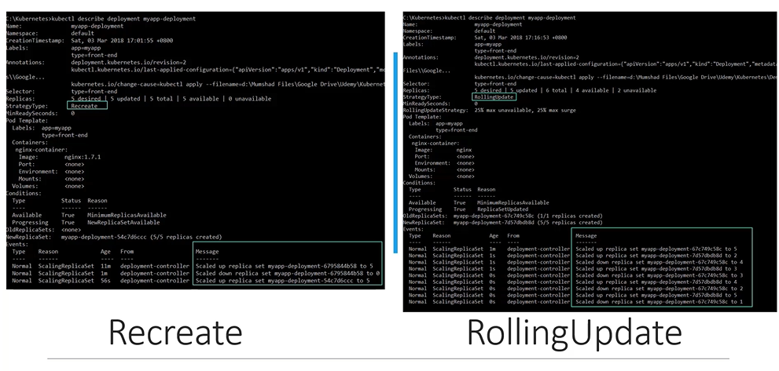
Inspect the ReplicaSets during and after an upgrade:
kubectl get replicasets
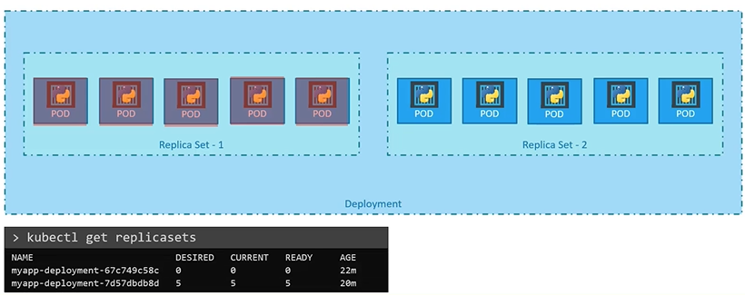
Rollbacks & Undo Operations
If an updated application version is defective (e.g., application crashes, runtime errors), Kubernetes allows an instant rollback to the previous revision.
# Roll back to the immediately preceding revision
kubectl rollout undo deployment/myapp-deployment
# Roll back to a specific target revision
kubectl rollout undo deployment/myapp-deployment --to-revision=1
During a rollback, Kubernetes reverses the process: scaling down the current ReplicaSet and scaling up the older ReplicaSet.
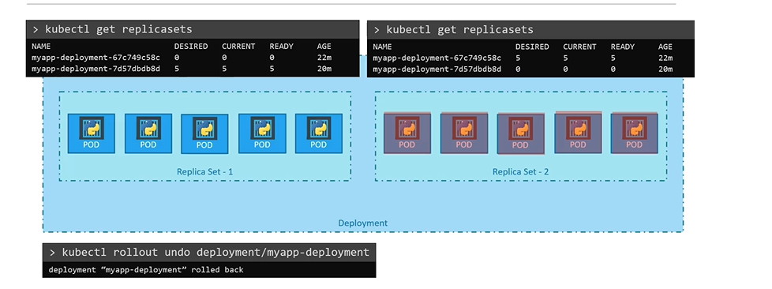
Deployment CLI Cheatsheet
# Create deployment
kubectl create -f deployment-definition.yaml
# List deployments and ReplicaSets
kubectl get deployments
kubectl get replicasets
# Update deployment image imperatively
kubectl set image deployment/myapp-deployment nginx=nginx:1.9.1
# Check rollout progress
kubectl rollout status deployment/myapp-deployment
# View revision history
kubectl rollout history deployment/myapp-deployment
# View specific revision details
kubectl rollout history deployment/myapp-deployment --revision=2
# Roll back deployment
kubectl rollout undo deployment/myapp-deployment
# Pause and resume rollouts (useful for batching changes)
kubectl rollout pause deployment/myapp-deployment
kubectl rollout resume deployment/myapp-deployment
Rollout Verification Script
# Verify application availability across rolling update cycles
for i in {1..35}; do
kubectl exec --namespace=kube-public curl -- sh -c \
'test=$(wget -qO- -T 2 http://webapp-service.default.svc.cluster.local:8080/info 2>&1) && echo "$test OK" || echo "Failed"'
echo ""
done
2. Commands and Arguments in Docker & Kubernetes
Docker Process Lifecycle & CMD
Unlike virtual machines designed to run long-lived operating systems with multiple background daemons, containers run a single specific foreground task or process. Once that process terminates or crashes, the container exits immediately.
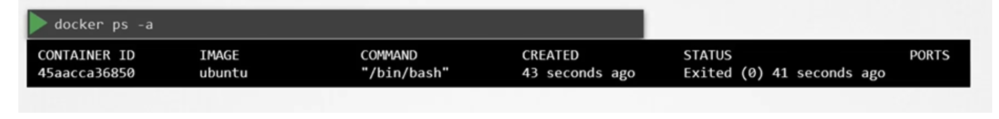
# Running plain ubuntu exits immediately because bash finds no interactive tty
docker run ubuntu
# Check running and stopped containers
docker ps
docker ps -a
The process launched inside a container is governed by the CMD instruction in the Dockerfile:
- NGINX image: CMD ["nginx", "-g", "daemon off;"]
- MySQL image: CMD ["mysqld"]
- Ubuntu image: CMD ["bash"] (exits immediately if no pseudo-TTY is allocated)
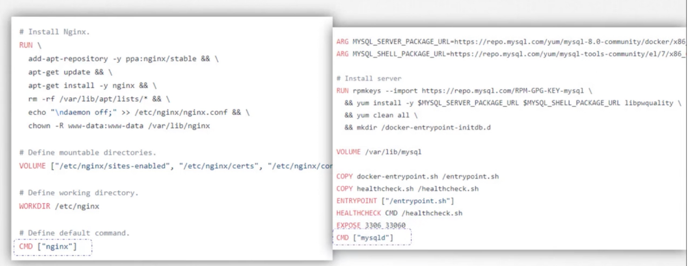
To override the default image command at container startup:
docker run ubuntu sleep 5
Docker ENTRYPOINT vs. CMD
To define default executable behavior in a custom image:
Use JSON array format (exec form) rather than plain shell string form:
# Correct exec form: separate executable and parameters
CMD ["sleep", "5"]
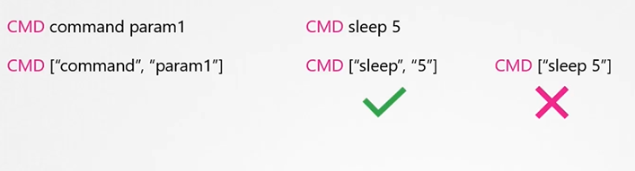
ENTRYPOINT (Fixed Executable)
ENTRYPOINT defines the executable program that will always execute on startup. Any arguments passed via docker run are appended to the entrypoint rather than replacing it.
FROM ubuntu
ENTRYPOINT ["sleep"]
# Executes: sleep 10
docker run ubuntu-sleeper 10
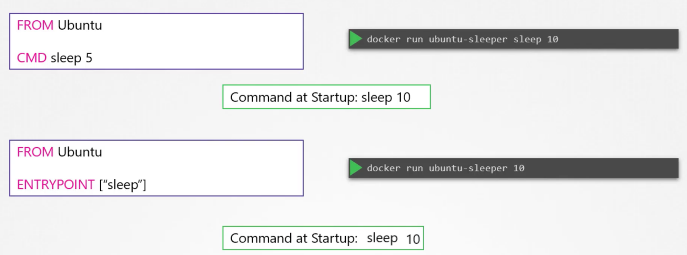
Combining ENTRYPOINT and CMD (Default Parameter Pattern)
When combined, ENTRYPOINT sets the base command and CMD provides the default arguments. CLI arguments override CMD while leaving ENTRYPOINT intact:
FROM ubuntu
ENTRYPOINT ["sleep"]
CMD ["5"]
docker run ubuntu-sleeper$\rightarrow$ Executes:sleep 5docker run ubuntu-sleeper 10$\rightarrow$ Executes:sleep 10
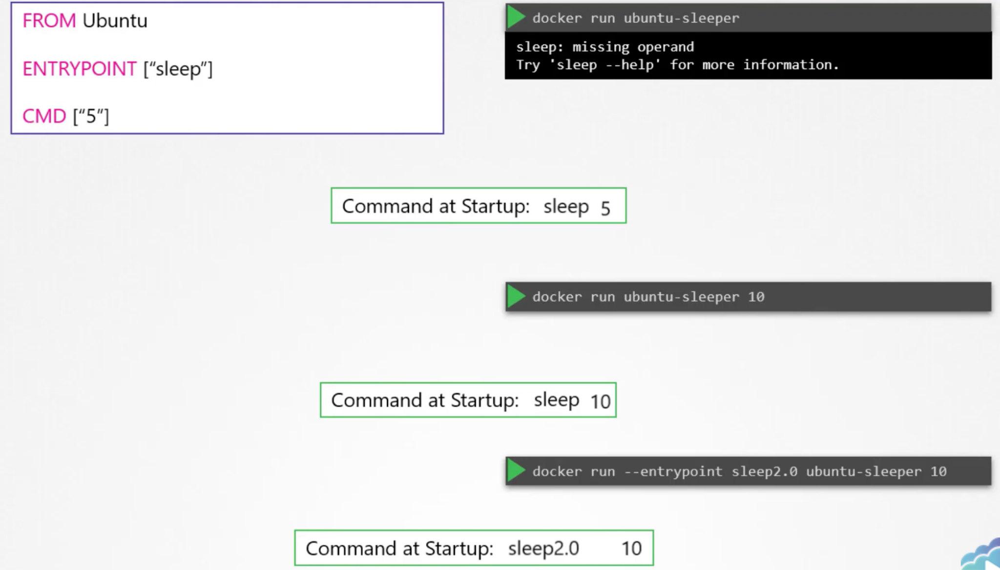
Overriding Entrypoint in Docker
To override the fixed ENTRYPOINT at runtime:
docker run --entrypoint sleep2.0 ubuntu-sleeper 10
Configuring command and args in Kubernetes Pods
In Kubernetes manifests:
- command overrides the Docker ENTRYPOINT.
- args overrides the Docker CMD.
apiVersion: v1
kind: Pod
metadata:
name: ubuntu-sleeper-pod
spec:
containers:
- name: ubuntu-sleeper
image: ubuntu-sleeper
command: ["sleep2.0"] # Overrides Dockerfile ENTRYPOINT
args: ["10"] # Overrides Dockerfile CMD
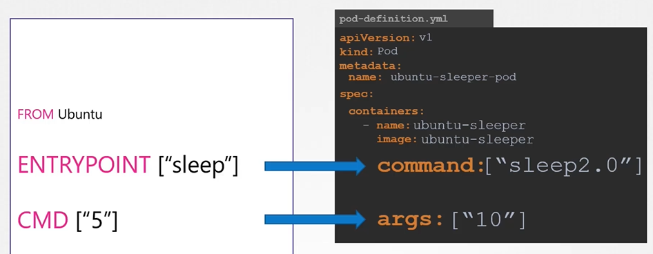
kubectl apply -f pod-definition.yaml
Docker vs. Kubernetes Direct Mapping
| Docker Concept | Kubernetes Equivalent | Purpose |
|---|---|---|
ENTRYPOINT ["sleep"] |
command: ["sleep"] |
Specifies the executable binary/process. |
CMD ["5"] |
args: ["5"] |
Specifies default arguments passed to the executable. |
--entrypoint <cmd> |
command: ["<cmd>"] |
Overrides the base binary at launch. |
docker run <image> <args> |
args: ["<args>"] |
Supplies arguments that override default CMD. |
[!IMPORTANT] Do not confuse
commandwith DockerCMD. In Kubernetes,commandmaps directly to Docker'sENTRYPOINT, andargsmaps to Docker'sCMD.
3. Application Environment Variables
Direct Key-Value Definitions
Environment variables can be injected directly into containers via the env array in the Pod specification:
apiVersion: v1
kind: Pod
metadata:
name: simple-webapp-color
spec:
containers:
- name: simple-webapp-color
image: simple-webapp-color
ports:
- containerPort: 8080
env:
- name: APP_COLOR
value: pink
Environment Variables via valueFrom
For centralized configuration and credential security, avoid hardcoding values. Use valueFrom to reference keys from ConfigMaps or Secrets:
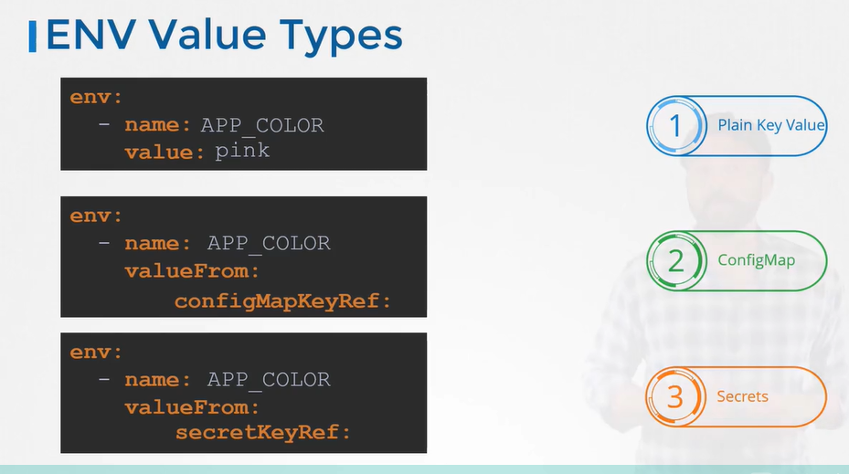
env:
- name: APP_COLOR
valueFrom:
configMapKeyRef:
name: app-config
key: APP_COLOR
- name: DB_PASSWORD
valueFrom:
secretKeyRef:
name: app-secret
key: DB_Password
4. ConfigMaps
Purpose & Lifecycle
ConfigMaps decouple configuration artifacts and parameters from container image builds, making applications portable across environments (development, staging, production).
ConfigMap workflow: 1. Define/Create the ConfigMap (imperatively or declaratively). 2. Inject the ConfigMap into the Pod (as individual environment variables, bulk environment variables, or mounted configuration volume files).
Imperative ConfigMap Creation
# 1. From literal values
kubectl create configmap app-config \
--from-literal=APP_COLOR=blue \
--from-literal=APP_MODE=prod
# 2. From a properties file
kubectl create configmap app-config --from-file=app_config.properties
# 3. From an entire directory of configuration files
kubectl create configmap app-config --from-file=path/to/configs/
Declarative ConfigMap Definition
apiVersion: v1
kind: ConfigMap
metadata:
name: app-config
data:
APP_COLOR: blue
APP_MODE: prod
# Create or update ConfigMap
kubectl apply -f config-map.yaml
# Inspect ConfigMaps
kubectl get configmaps
kubectl describe configmap app-config
Injecting ConfigMaps into Pods
Method 1: Bulk Injection (envFrom)
Injects all key-value pairs from the ConfigMap as environment variables:
apiVersion: v1
kind: Pod
metadata:
name: simple-webapp-color
spec:
containers:
- name: simple-webapp-color
image: simple-webapp-color
ports:
- containerPort: 8080
envFrom:
- configMapRef:
name: app-config
Method 2: Single Key Injection (valueFrom)
env:
- name: APP_COLOR
valueFrom:
configMapKeyRef:
name: app-config
key: APP_COLOR
Method 3: Mounted Volume
Mounts each ConfigMap key as a distinct file inside a directory:
spec:
containers:
- name: webapp
image: simple-webapp
volumeMounts:
- name: config-volume
mountPath: /etc/config
volumes:
- name: config-volume
configMap:
name: app-config
5. Kubernetes Secrets
Secrets vs. ConfigMaps
Hardcoding sensitive credentials (passwords, tokens, TLS certificates) in application code or plain ConfigMaps is a critical security vulnerability:
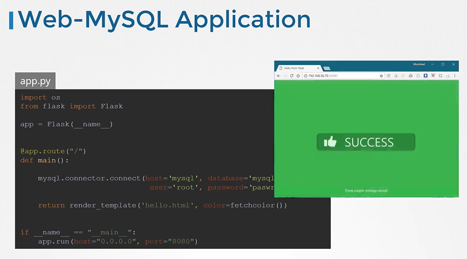
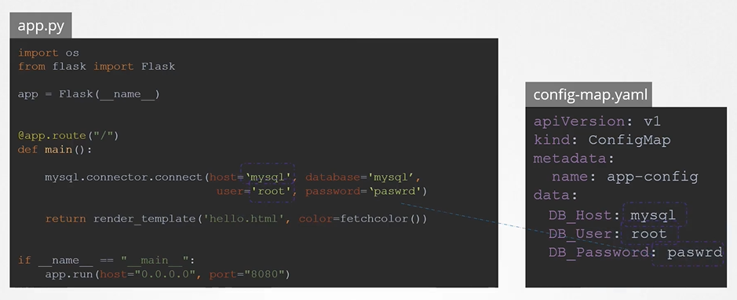
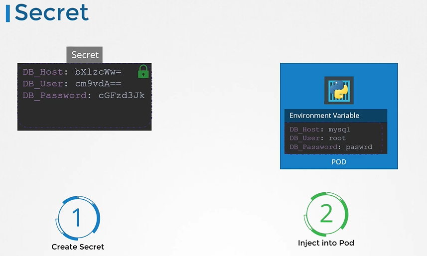
- ConfigMaps: Plaintext configuration keys (non-sensitive).
- Secrets: Intended for sensitive credentials. Stored by default in base64 encoded format within Kubernetes.
Imperative Secret Creation
# 1. From literal values
kubectl create secret generic app-secret \
--from-literal=DB_Host=mysql \
--from-literal=DB_User=root \
--from-literal=DB_Password=paswrd
# 2. From credential files
kubectl create secret generic app-secret --from-file=app_secret.properties
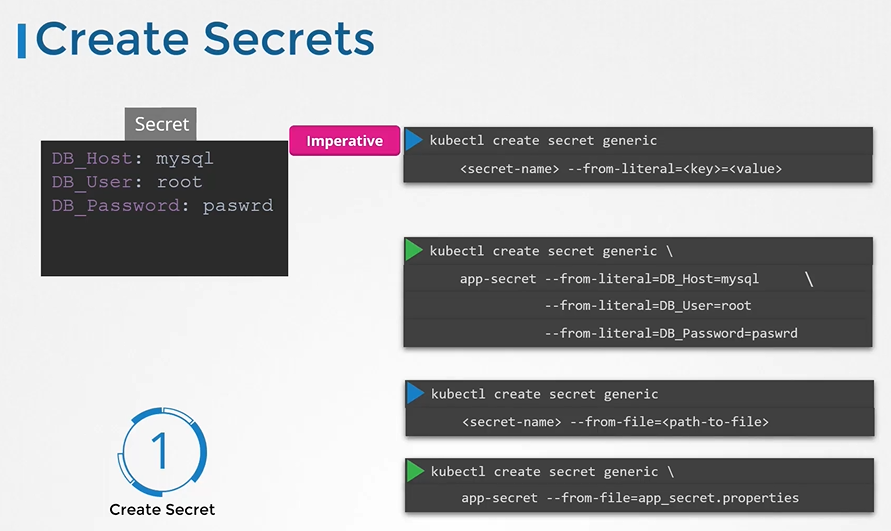
Declarative Secret Definition & Base64 Encoding
Declarative Secret manifests require base64 encoded values under data:
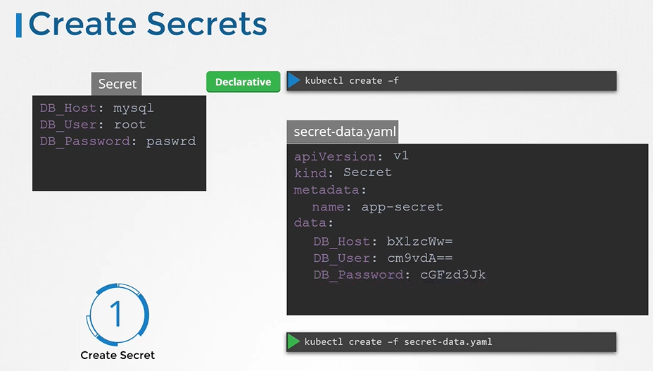
Generate base64 encoded strings using Linux CLI:
echo -n "mysql" | base64 # Output: bXlzcWw=
echo -n "root" | base64 # Output: cm9vdA==
echo -n "paswrd" | base64 # Output: cGFzd3Jk
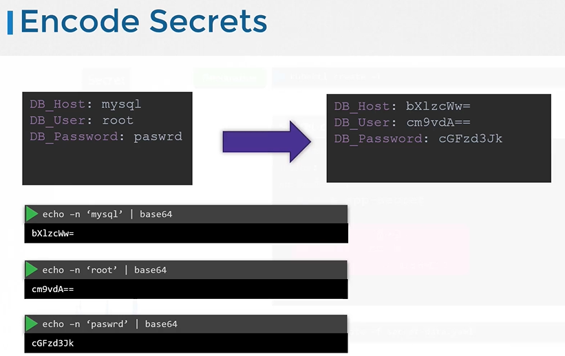
Secret manifest (secret-data.yaml):
apiVersion: v1
kind: Secret
metadata:
name: app-secret
type: Opaque
data:
DB_Host: bXlzcWw=
DB_User: cm9vdA==
DB_Password: cGFzd3Jk
kubectl apply -f secret-data.yaml
[!TIP] Use
stringDatain Secret manifests if you prefer entering plain strings. Kubernetes automatically encodes them to base64 upon submission.
Inspecting and Decoding Secrets
# List secrets
kubectl get secrets
# Describe secret (keys shown, values hidden)
kubectl describe secret app-secret
# View full manifest including base64 encoded data
kubectl get secret app-secret -o yaml
# Decode base64 strings
echo -n "cGFzd3Jk" | base64 --decode
Injecting Secrets into Pods
Method 1: Bulk Injection (envFrom)
apiVersion: v1
kind: Pod
metadata:
name: simple-webapp-color
spec:
containers:
- name: simple-webapp-color
image: simple-webapp-color
ports:
- containerPort: 8080
envFrom:
- secretRef:
name: app-secret
Method 2: Single Key Injection (valueFrom)
env:
- name: DB_PASSWORD
valueFrom:
secretKeyRef:
name: app-secret
key: DB_Password
Method 3: Secret Volume Mount
spec:
containers:
- name: webapp
image: simple-webapp
volumeMounts:
- name: secret-volume
mountPath: /etc/secrets
readOnly: true
volumes:
- name: secret-volume
secret:
secretName: app-secret
Each secret key is mounted as an independent file (e.g., /etc/secrets/DB_Password).
Secret Security Risks & Hardening Best Practices
[!CAUTION] Base64 is an encoding scheme, NOT encryption. Anyone with RBAC access to read Secrets can instantly decode the values.
Recommended Production Hardening:
- Never Commit Secrets to Git: Do not push secret manifests to source control repositories.
- Encryption at Rest: Enable ETCD Encryption at Rest using
EncryptionConfiguration(aescbc,secretbox, or KMS). - Kubelet In-Memory Storage: Kubelet writes Secrets only to memory-backed
tmpfsmounts on worker nodes, deleting them immediately when dependent Pods terminate. - Least-Privilege Node Delivery: Kubelet only requests Secrets required by Pods scheduled to its specific node.
- External Secret Stores: Integrate enterprise secret stores like HashiCorp Vault, AWS Secrets Manager, or Azure Key Vault via the Kubernetes Secrets Store CSI Driver or Helm Secrets.
6. Multi-Container Pod Patterns
Microservice Co-location & Shared Context
While microservices advocate decoupling applications into independent containers, helper processes often require tight co-location with the main application (e.g., log forwarders, proxies, local caches).
Multi-container Pods share:
- Lifecycle: Created, scheduled, and destroyed together.
- Network Namespace: Share identical IP address and port space; communicate with each other over localhost.
- Storage Volumes: Can mount identical emptyDir or persistent volumes to share files directly.
Design Patterns: Sidecar, Adapter, Ambassador
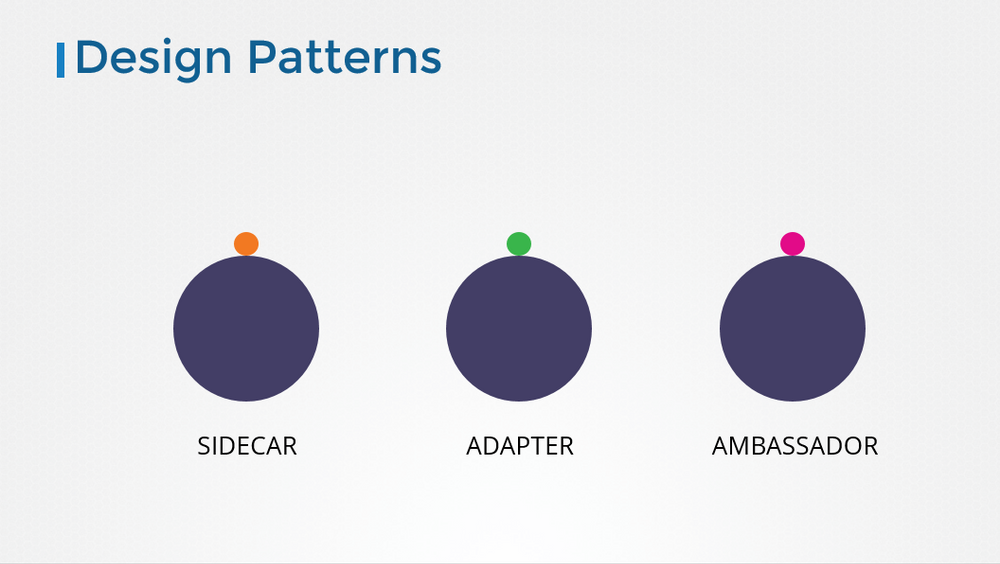
- Sidecar Pattern: Extends and enhances the main container's capabilities without modifying application code (e.g., a logging agent collecting application logs and pushing them to Elasticsearch).
- Adapter Pattern: Standardizes or normalizes the output of heterogeneous application containers (e.g., transforming non-standard metrics into Prometheus format).
- Ambassador Pattern: Acts as a local proxy abstracting external network complexities (e.g., proxying local connections to a sharded Redis database cluster).
Multi-Container Pod Manifest
apiVersion: v1
kind: Pod
metadata:
name: simple-webapp
labels:
app: simple-webapp
spec:
containers:
- name: web-app
image: simple-webapp
ports:
- containerPort: 8080
- name: log-agent
image: log-agent
volumeMounts:
- name: log-volume
mountPath: /var/log/app
volumes:
- name: log-volume
emptyDir: {}
7. Init Containers
Initialization Lifecycle & Sequential Execution
Main application containers in a Pod are expected to run continuously for the Pod's entire lifecycle. However, setup tasks often need to run to completion once before the application starts: - Fetching configuration files or cloning a Git repository. - Warming up caches or running database schema migrations. - Blocking until an external dependent service (API, DB) becomes reachable.
Execution Rules:
- Defined under
spec.initContainers. - Execute one by one in strict sequential order.
- Each Init Container must exit successfully (
exit code 0) before the next begins. - If an Init Container fails, Kubernetes restarts the Pod according to
restartPolicy(defaultAlways), re-running Init Containers from the beginning. - Main containers start only after all Init Containers complete successfully.
Init Container Manifest & Use Cases
apiVersion: v1
kind: Pod
metadata:
name: myapp-pod
labels:
app: myapp
spec:
containers:
- name: myapp-container
image: busybox:1.28
command: ['sh', '-c', 'echo The app is running! && sleep 3600']
initContainers:
- name: wait-for-service
image: busybox:1.28
command: ['sh', '-c', 'until nslookup myservice.default.svc.cluster.local; do echo waiting for myservice; sleep 2; done;']
- name: wait-for-db
image: busybox:1.28
command: ['sh', '-c', 'until nslookup mydb.default.svc.cluster.local; do echo waiting for mydb; sleep 2; done;']
8. Self-Healing Applications & Container Health Probes
Kubernetes supports self-healing applications through ReplicaSets, Deployments, and native Container Probes executed by the node's kubelet.
Probe Types: Startup, Liveness, and Readiness
-
startupProbe: - Protects slow-starting legacy applications (e.g., enterprise Java/JVM apps) from premature kills. - Pauses alllivenessProbeandreadinessProbeexecutions until it succeeds. - If it failsfailureThresholdtimes, the container is killed and restarted. -
livenessProbe: - Detects whether an application is stuck in an unrecoverable state (deadlock, frozen process, fatal loop). - If failures reachfailureThreshold,kubeletterminates the container and initiates a restart according torestartPolicy. -
readinessProbe: - Validates whether the container is ready to accept incoming client traffic. - When a readiness probe fails, the Pod'sReadycondition is set toFalse. - The endpoints controller immediately detaches the Pod's IP from Service backends andEndpointSlices. The container process is never killed or restarted.
Probe Handlers
httpGet: Sends an HTTP GET request to a specified port and path. HTTP status codes $200 \le \text{code} < 400$ indicate success.tcpSocket: Checks whether a TCP socket handshake succeeds on the designated port.exec: Runs a command inside the container namespace; an exit status code of0indicates success.grpc: Leverages the gRPC Health Checking Protocol to evaluate service status.
Production Multi-Probe Manifest
apiVersion: v1
kind: Pod
metadata:
name: resilient-service
labels:
app: api-server
spec:
containers:
- name: api
image: nginx:alpine
ports:
- containerPort: 8080
startupProbe:
httpGet:
path: /healthz
port: 8080
initialDelaySeconds: 10
periodSeconds: 5
failureThreshold: 20 # Allows up to 100s for slow startup
livenessProbe:
httpGet:
path: /healthz
port: 8080
periodSeconds: 10
timeoutSeconds: 2
failureThreshold: 3
readinessProbe:
httpGet:
path: /ready
port: 8080
periodSeconds: 5
successThreshold: 1
failureThreshold: 2